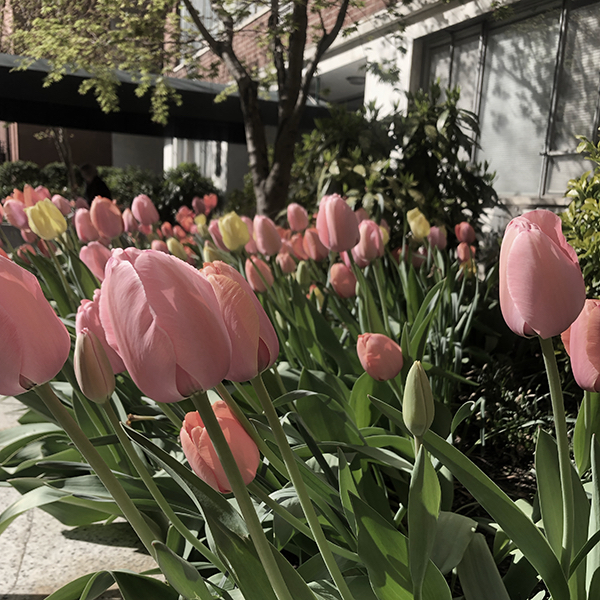

These photos were taken and edited by the creator of the webpage. The purpose of the assigment was to become familiarized with the editing application Adobe Photoshop.

Photo to the left is of a garden with blooming flowers in Manhattan and photo to the right is of an almost empty New Jersey Transit train in the Montclair-Boonton Line.
This video was an assigment for the Transmedia class in the Journalism + Design program. It is an interview with Jonathan Arriaga about music in spanish.
This video is an insight into the mind of a music enthusiast, learn about the music through someone who truly appreciates it.